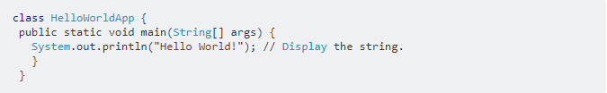
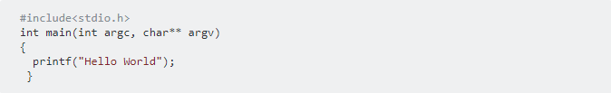
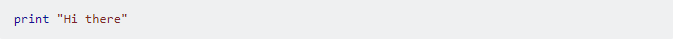
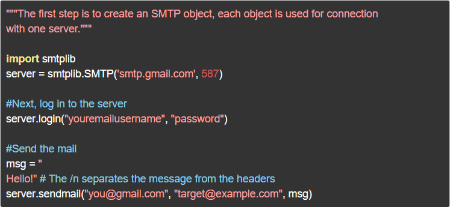

Вам точно стоит попробовать Python, если вы никогда не писали код, но хотите получить первую работающую программу как можно быстрее. Самый простой пример — программа, которая выводит на экран заданную фразу. Вот как выглядит ее код на
трёх разных языках. Сравните количество и понятность строк кода.
“Java” справляется в 5 строк, используем множество скобок.

“C” работает похоже, хоть строк и немного меньше:

Python использует одну понятную строку:

Конечно, это не значит, что так будет всегда. Есть программы посложнее, но в них всё ещё можно разобраться, если немного знать английский. Например, вот программа, которая умеет отправлять электронные письма:

Если смогли прочесть текст программы и поняли, что она делает — это хороший знак
В каких сферах используют Python ?
Веб-разработка
Относительно недавно в веб-разработке стали очень популярны Python-фреймворки, такие как Django и Flask. Они облегчают процесс написания на языке Python кода серверной части приложений. Это тот код, который запускается на сервере, а не
на устройствах и браузерах пользователей (frontend-код). Если вы не знакомы с отличиями backend- и frontend-разработки, вам будет интересна заметка в конце статьи.